블록 종류에서 '동작 실행'을 선택하시면 다음과 같은 창이 뜹니다.
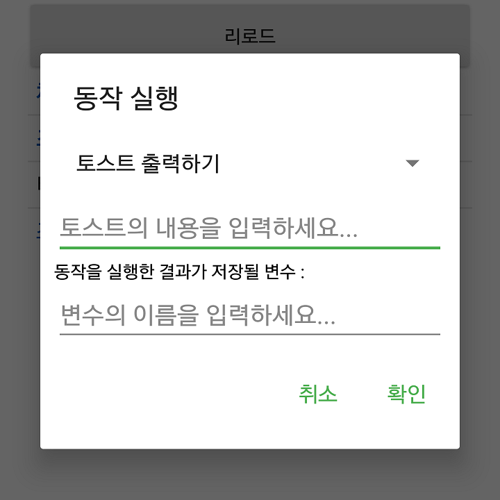현재 지원하고 있는 동작들은 다음과 같습니다.
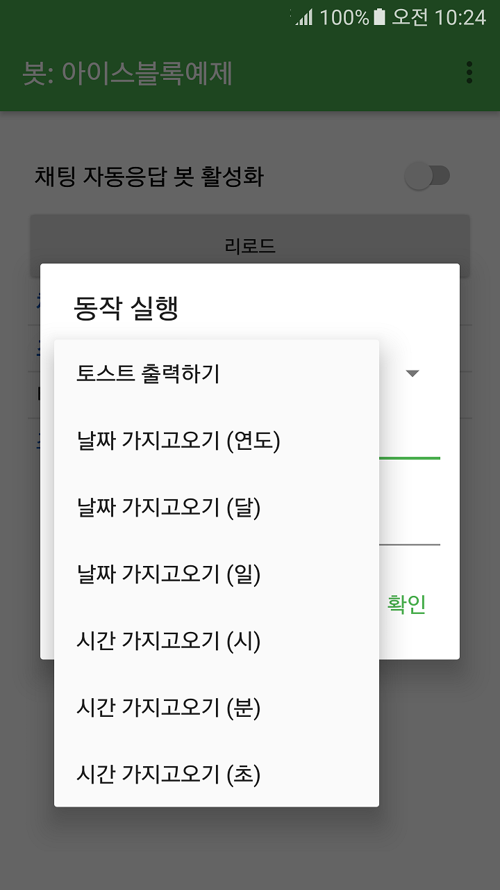다음은 '토스트다냥'이라는 토스트를 띄우는 예시입니다. 토스트 생성은 딱히 반환하는 값이 없음으로, '동작을 실행한 결과가 저장될 변수'는 생략하였습니다.
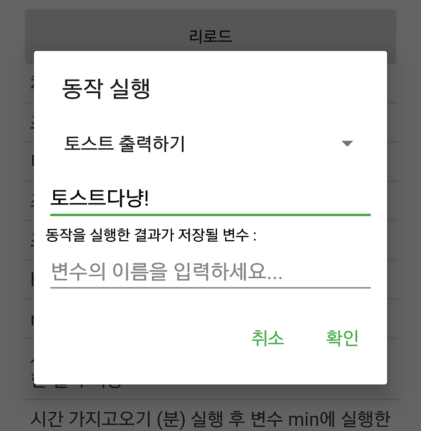토스트 출력과는 달리 동작을 위해 값을 넘길 필요가 없는 경우는 다음과 같이 '토스트 내용' 등을 입력하는 텍스트 입력란이 사라집니다.
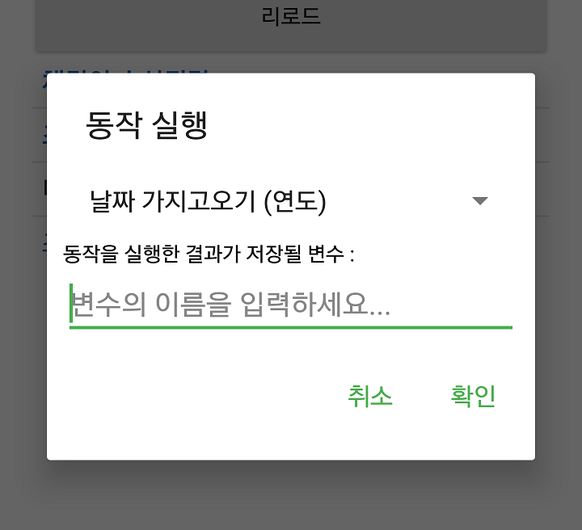다음은 현재 시간을 가지고오는 예시입니다. 일단, 현재 시간 중 '시' 부분이 저장될 변수(hour)를 만들고(변수의 이름이 꼭 사진과 같을 필요는 없습니다),
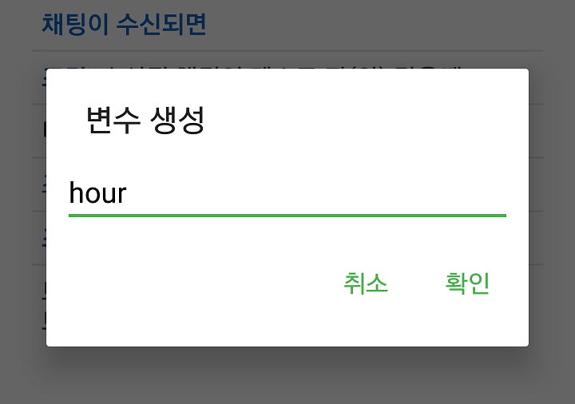현재 시간 중 '분' 부분이 저장될 변수(min)를 만듭니다.
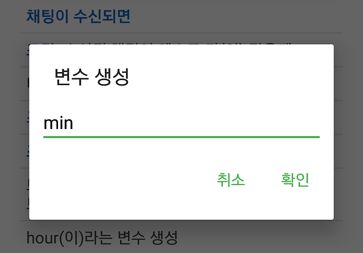그리고, 변수 hour에 현재 시간 중 '시' 부분을 가지고오는 동작을 수행한 결과를 저장하고
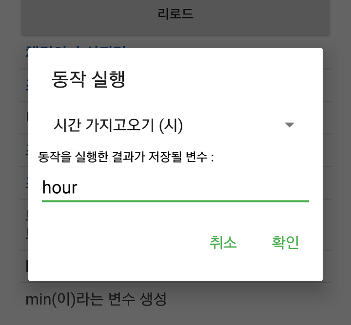변수 min에는 현재 시간 중 '분' 부분을 가지고오는 동작을 수행한 결과를 저장한 뒤,
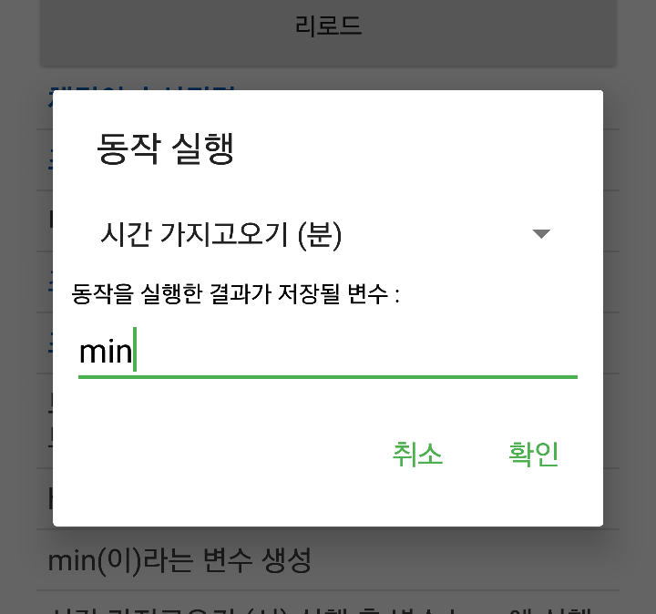각 변수들에 저장된 값을 다음과 같이 인용합니다.
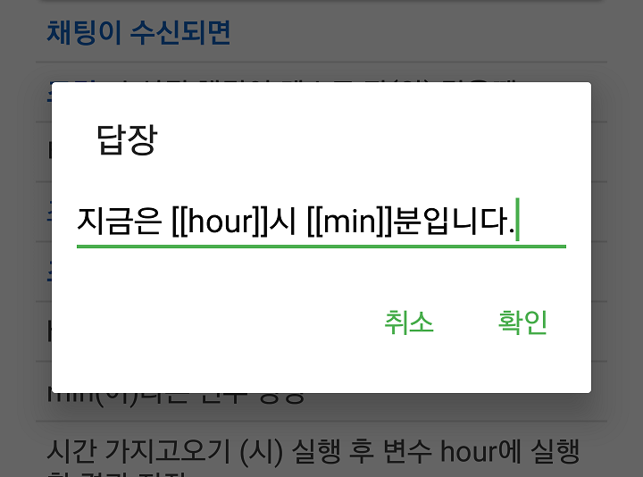'동작 테스트'라는 채팅이 수신되면, 토스트 메시지와 함께 현재 시간을 출력하는 기능이 완성되었습니다.
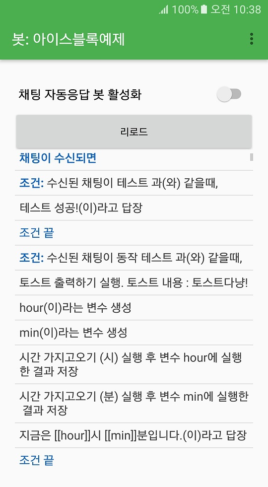실행 결과 :
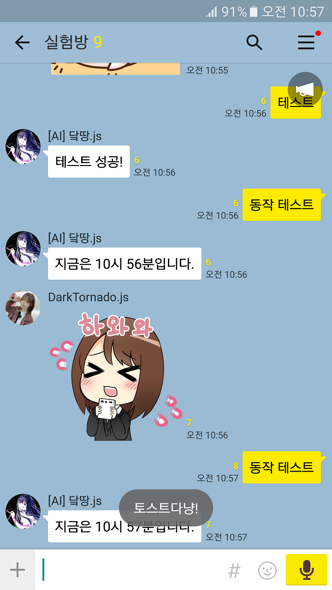© 2020 Dark Tornado, All rights reserved.